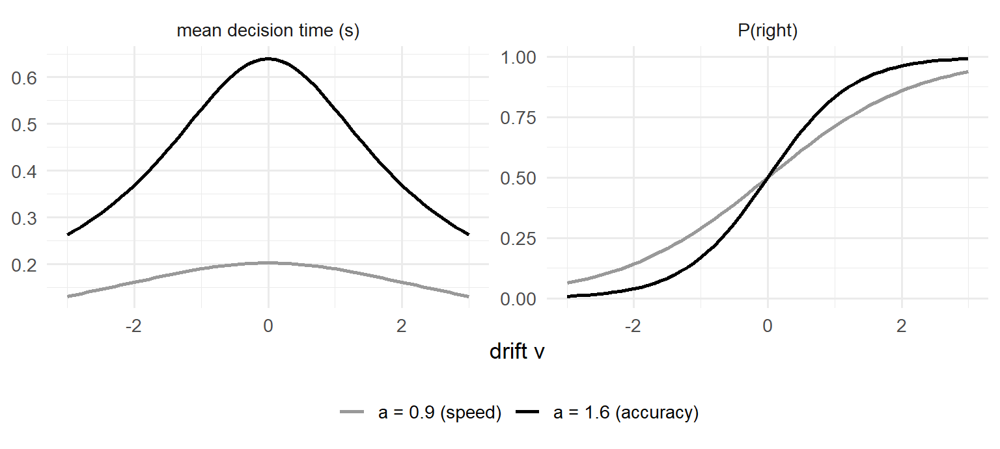

3 What The Model Predicts
Simulating trials one by one is slow, and its answers are noisy. For two quantities there are exact formulas: the probability of each response, and the mean decision time. This chapter checks them against the simulator from Chapter 2 and uses them to see how drift and caution shape behaviour.
3.1 The Probability Of Each Response
Equation. With \(\sigma = 1\) and a starting point of \(z a\), the probability of reaching the upper boundary is
\[ P(\text{upper}) = \frac{1 - e^{-2 v a z}}{1 - e^{-2 v a}}. \]
Code.
p_upper <- function(v, a, z) {
if (abs(v) < 1e-8) return(z) # with no drift, P(upper) equals the starting fraction
(1 - exp(-2 * v * a * z)) / (1 - exp(-2 * v * a))
}
p_upper(v = 1, a = 1.2, z = 0.5)## [1] 0.7693.2 The Mean Decision Time
Equation. With an unbiased start (\(z = 0.5\)), the mean decision time is
\[ E[T_{decision}] = \frac{a}{2v}\tanh\!\left(\frac{a v}{2}\right). \]
Code.
mean_dt <- function(v, a) {
if (abs(v) < 1e-8) return(a^2 / 4)
a / (2 * v) * tanh(a * v / 2)
}
mean_dt(v = 1, a = 1.2)## [1] 0.3223.3 Checking The Formulas Against The Simulator
Two thousand simulated trials should give nearly the same answers:
set.seed(1)
sims <- map_dfr(1:2000, function(i) {
tr <- simulate_ddm_trial(v = 1, a = 1.2, z = 0.5, t0 = 0)
tibble(upper = tr$upper, decision_time = tr$rt)
})
sims |>
summarise(simulated_p_upper = mean(upper),
formula_p_upper = p_upper(1, 1.2, 0.5),
simulated_mean_dt = mean(decision_time),
formula_mean_dt = mean_dt(1, 1.2))| simulated_p_upper | formula_p_upper | simulated_mean_dt | formula_mean_dt |
|---|---|---|---|
| 0.766 | 0.769 | 0.336 | 0.322 |
They agree to within simulation noise, plus a small delay from the 1 ms time steps (Chapter 2, stage 4).
3.4 Relation To A Logistic Choice Rule
With \(z = 0.5\) the choice formula reduces to
\[ P(\text{upper}) = \frac{1}{1 + e^{-a v}} = \text{logistic}(a \cdot v), \]
which is the logistic choice rule used in logistic regression and in softmax models of choice, with \(a \cdot v\) in place of the linear predictor. Two consequences follow:
- choices alone identify only the product \(a v\), so a cautious person seeing weak motion and an incautious person seeing strong motion can make the same choices;
- RTs separate the two, because a larger \(a\) makes choices slower and more consistent, while a larger \(v\) makes them faster and more consistent.
Picture.
predictions <- expand_grid(a = c(0.9, 1.6), v = seq(-3, 3, 0.1)) |>
mutate(`P(right)` = map2_dbl(v, a, \(v, a) p_upper(v, a, z = 0.5)),
`mean decision time (s)` = map2_dbl(v, a, mean_dt),
boundary = if_else(a == 0.9, "a = 0.9 (speed)", "a = 1.6 (accuracy)")) |>
pivot_longer(c(`P(right)`, `mean decision time (s)`), names_to = "prediction")
ggplot(predictions, aes(x = v, y = value, colour = boundary)) +
geom_line(linewidth = 1) +
facet_wrap(~ prediction, scales = "free_y") +
scale_colour_manual(values = c("grey60", "black")) +
labs(x = "drift v", y = NULL, colour = NULL) +
theme(legend.position = "bottom")
In random-dot terms: stronger motion in either direction (larger \(|v|\)) makes responses more consistent and faster. A wider boundary (\(a = 1.6\), as in accuracy blocks) makes them more consistent but slower at every coherence. Decision time is longest when there is no coherent motion (\(v = 0\)). This is the speed-accuracy trade-off from Chapter 1, produced by a single parameter.